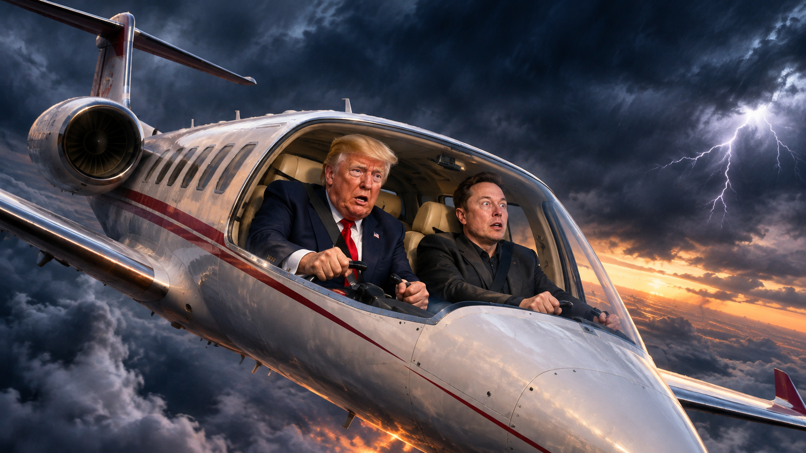

竞选失败后，究竟有哪些帐要算？
民主党夺回国会两院之后，特朗普将面临哪些监督与政治压力？马斯克的政治投资、DOGE争议与商业帝国，又可能承担怎样的代价？
After the Election Defeat, What Accounts Remain to Be Settled?
Congressional oversight, Trump’s political challenges, Musk’s exposure and the potential market consequences.

选举已经结束，真正的政治与经济账本却刚刚翻开。谁能调查谁？哪些指控有法律基础？哪些损失只是股市账面波动？
01 · 选举之夜：政治版图发生了什么
据路透社与美联社11月4日报道，民主党在2026年美国中期选举中赢得参议院与众议院多数席位。得克萨斯州的参议院和州长选举也出现民主党胜利。特朗普本人并非本次中期选举候选人，因此“竞选失败”指其支持的共和党候选人及国会控制权遭遇挫折，而非总统职位发生变化。选民对生活成本、伊朗战争、关税与政府施政的不满是报道中反复出现的议题。
02 · 第一笔账：国会监督与政治责任
民主党议员明年1月就任后，将有条件通过委员会听证、文件要求和依法签发传票，对战争决策、行政命令、政府合同、预算支出及政府人员行为展开审查。调查可能使白宫承受持续的政治压力，但监督不等于刑事起诉，传票也不是定罪。参议院多数党还可影响人事任命确认。总统仍掌握行政权与否决权，未来更可能出现复杂的预算谈判与政策拉锯。
03 · 第二笔账：伊朗战争、通胀与财政成本
战争授权、军事行动成本、油价上升与家庭生活负担，可能成为国会重点追问的议题。若战争缓和，能源成本可能下降，运输和消费行业受益；若冲突延长，财政支出、通胀与国债收益率压力可能继续存在。战争政策受到质疑并不自动意味着总统本人涉嫌犯罪。
04 · 第三笔账：特朗普可能面对的法律风险
国会可以调查利益冲突、政府采购、官员履职与潜在违法行为；是否产生民事诉讼或刑事案件，取决于独立的证据和有权机关的法律判断。众议院可以启动弹劾程序，但参议院定罪需要出席议员三分之二赞成。对总统官方行为的法律责任还涉及复杂的宪法和司法判例。不能将未来调查写成已提出的指控。
05 · 第四笔账：马斯克的政治投资
马斯克曾以资金和公共影响力支持共和党候选人。政治捐款本身属于合法政治参与，不意味着可因选举失利被罚款。真正的经济成本可能包括政治投入无法收回、商业品牌两极化、法律顾问与合规支出，以及投资者重新定价其企业风险。政治失败与商业损失之间不存在机械的一一对应关系。
06 · 第五笔账：DOGE、政府数据与利益冲突
国会可能重点核查DOGE节支数据是否可核实、敏感政府数据的访问权限、利益冲突回避，以及马斯克关联企业与政府合同之间是否存在不当影响。发现管理失当并不等于发现欺诈；若要提出具体法律指控，仍需查明个人行为、主观要件和法律依据。
07 · 第六笔账：特斯拉与SpaceX的经营风险
特斯拉面临电动车需求、品牌认知、自动驾驶监管与估值压力；SpaceX可能面对国防及航天合同监督、发射审批、环境和能源许可等不确定性。政府加强监督并不必然导致合同取消，既有项目也可能因技术能力与国家需求继续推进。SpaceX并非普通公开上市股票，不能像TSLA一样引用公开交易所即时股价。
08 · 第七笔账：马斯克究竟可能损失多少钱
个人财富损失与公司现金损失必须分开。举例说，若某人持有的上市股票市值为1000亿美元，股价下跌10%对应约100亿美元账面缩水，下跌20%对应约200亿美元；这只是算术情景，并非马斯克的实际持仓测算，也不是罚款。合同延期、融资成本和合规费用属于企业经营损失，须等待实际披露才可量化。
09 · 第八笔账：华尔街如何重新估值
TSLA对政策、消费者态度和自动驾驶监管敏感；FSLR与ENPH等清洁能源企业可能受益于市场对政策方向的重新评估；NOC、LMT的订单预期与国防预算有关；NVDA、AMD、MSFT等科技公司则更依赖AI投资、数据中心建设、盈利与估值。国会变化不是“所有股票下跌”的充分条件，盘前波动也不能当作收盘事实。
10 · 未来两年：三种可能路径
如果两党达成预算与政策妥协，市场可能逐渐转向企业盈利；如果调查密集、政策僵局持续，风险溢价可能上升；如果战争和油价冲击扩大，通胀、利率与企业利润将受到更广泛影响。这些是条件分析，不是确定预测。
11 · 结语：要算的是证据账、财政账与市场账
一次选举能够改变国会权力，却不会自动改变法律事实。对特朗普而言，问题在于如何应对监督、战争与预算；对马斯克而言，问题在于如何区分政治身份、政府职责和企业利益。最终应由公开文件、独立调查、司法程序和企业财务报告来回答“有哪些账要算”。
The election is over. The political, legal and financial reckoning is only beginning. What is proven, what can be investigated, and what remains hypothetical?
01 · The election reshapes Washington
Reuters and AP reported on November 4 that Democrats won control of both chambers of Congress in the 2026 midterms, including major breakthroughs in Texas. Trump was not himself a candidate: the defeat refers to Republican candidates he supported and his party’s loss of congressional control. Voter frustration over living costs, the Iran war and government policy featured prominently.
02 · Congressional oversight and political accountability
When the new Congress takes office in January, committees can hold hearings, request records and issue lawful subpoenas. The administration may face scrutiny over war decisions, federal spending, contracts and executive actions. An investigation is not a criminal charge, and the president retains executive powers and a veto.
03 · War, inflation and public finances
Congress may question the legal basis, cost and consequences of the Iran war. De-escalation could relieve energy costs, while prolonged conflict could sustain inflation and fiscal pressures. A disputed policy choice does not by itself establish a crime.
04 · Trump’s legal exposure
Oversight could examine conflicts of interest, procurement and potential misconduct. Any civil or criminal case requires specific evidence and a competent authority. The House may impeach, but Senate conviction requires a two-thirds vote of senators present. Legal questions concerning official presidential acts are complex.
05 · Musk’s political spending
Musk’s financial and public support for Republicans may yield limited political returns. Lawful political donations do not become penalties after an election loss. Potential business consequences include brand polarization, compliance costs and changes in investor expectations.
06 · DOGE and conflicts of interest
Possible areas of oversight include the accuracy of claimed savings, access to sensitive government information, recusal obligations and possible improper influence on federal contracts. Administrative shortcomings are not automatically fraud, and individual liability requires proof.
07 · Tesla and SpaceX
Tesla faces demand, brand, autonomous-driving and valuation risks. SpaceX may face greater scrutiny of government contracts, launches and permitting. Oversight does not necessarily imply cancellation. SpaceX is not an ordinary publicly traded stock, so exchange-style real-time stock quotations should not be asserted.
08 · How much could Musk lose?
A hypothetical $100 billion stockholding would lose $10 billion on paper after a 10% price decline or $20 billion after a 20% decline. These are illustrative calculations, not actual estimates of Musk’s holdings or fines. Corporate cash losses require disclosed evidence.
09 · Wall Street reprices risk
TSLA may react to regulatory and consumer risks; FSLR and ENPH to clean-energy policy; NOC and LMT to defense spending; and NVDA, AMD and MSFT to AI demand, investment and valuations. A political shift does not imply that every stock will fall.
10 · Three paths ahead
Negotiated compromise may shift attention toward earnings; prolonged investigations and gridlock may raise uncertainty; and an extended war or energy shock could affect inflation, rates and profits. These are scenarios, not forecasts.
11 · The accounts that matter
Election results change political oversight, not the legal standard of proof. Public records, independent inquiries, courts and financial disclosures—not speculation—will determine what liabilities and costs actually emerge.